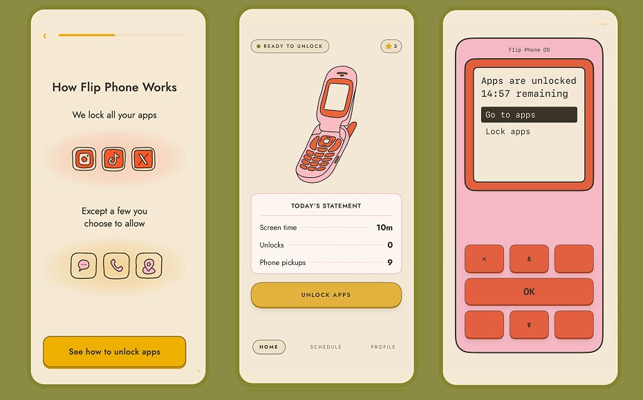
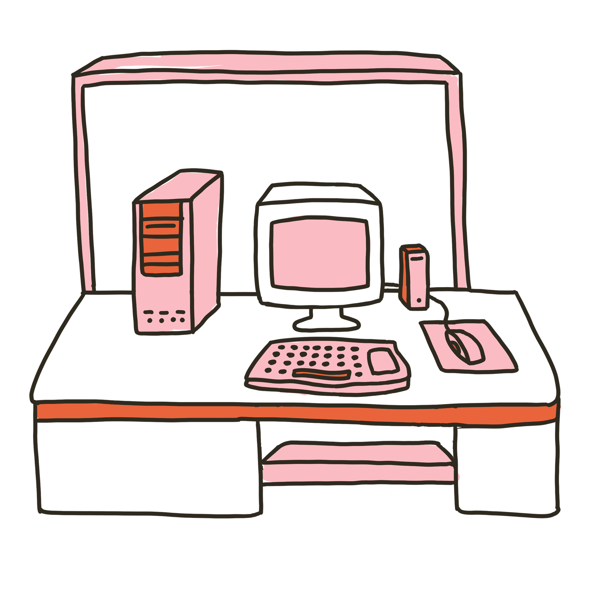
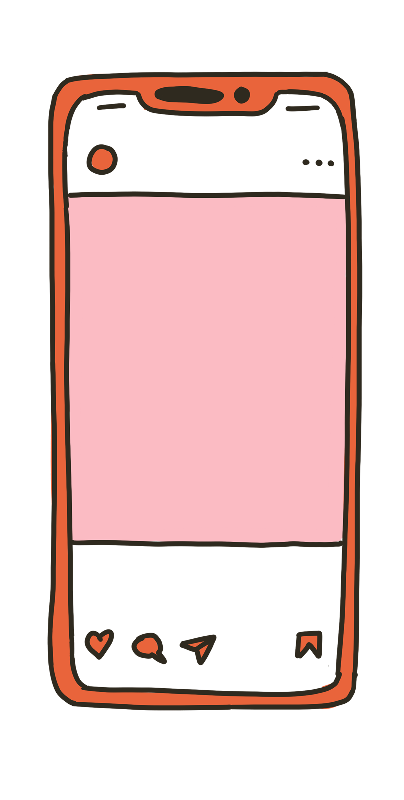

Flip Phone OS
Turn your iPhone into a flip phone.
- Role
- Founder & Product Owner
- Timeline
- 2025 → present
- Platform
- iOS · formerly Landline
- Team
- Solo, concept through launch planning
- Status
- In beta, launching 2026
In short
- ProblemFlip Phone OS blocks every app except calls, texts, and a few chosen tools, and unlocks only while the phone is charging. It asks for a far bigger sacrifice than a blocker does, from someone who downloaded it ten seconds ago.
- ApproachI specified the onboarding as a 24-screen, three-act flow and iterated it to v12 as a tappable HTML prototype before writing any production code.
- ResultThe prototype is the spec: reviewable, sequenced, and cheap to change. In beta, launching 2026.
The problem
Free Time asks you to pause. Flip Phone OS asks you to give up your smartphone and get it back only while it's plugged into a wall. This is a novel concept and requires both explaining a hardware and software core mechanism in easy-to-understand ways.
How I broke it down
Three acts, each with a single job. Sequencing them this way is what made the flow reviewable. I could change the order inside an act without renegotiating the whole thing, and I could tell when a screen was in the wrong act because it was doing the wrong job.
The problem you already feel
Get the user to state the problem in their own terms before the product says a word about itself.
- The magnet
- Screen time
- The reveal
- When do you scroll
- Screen time snapshot
The mechanism
Explain exactly what the product does, in concrete terms, so the sacrifice is legible rather than vague.
- The turn
- How Flip Phone works
- Apps are locked
- Start a timed session
- Timer ends
- Why offline
- What to do offline
The commitment
Convert a stated problem and an understood mechanism into a goal, a payment, and a permission, in that order.
- Set a screen time goal
- Watch it drop
- Personalized plan
- Social proof
- Paywall
- Screen Time permission
- App picker
- Unlock limit & notifications
Decisions and tradeoffs
Building onboarding directly in Xcode. Prototyping in Figma.
Twelve versions at roughly an afternoon each. In Xcode every pass is a day and a rebuild; in Figma it isn't tappable on a real phone, which is the only place this flow can honestly be judged. The prototype doubles as the spec I hand to anyone reviewing it.
Paywall at the top, to filter early. Paywall at the very end, after setup.
Paywalling early filters out people who haven't yet decided they have a problem, which is most of them at screen three. Paywalling after setup means the work is done and the leverage is gone. Right after the user sets a goal and sees the projected drop is the one moment the price is being compared to something they want.
Asking up front to fail fast and avoid wasted onboarding.
Failing fast optimizes for my time, not theirs. By the last screen the user has named the problem, set a goal, and paid. The permission stops being a demand from a stranger and becomes the final step of something they've already committed to.
What shipped



Where it stands
What I'd do next
The prototype has been iterated against my own judgment and a small beta, which is the weakest part of the case. The next version should be tested with people who have never heard the pitch, with the act boundaries instrumented so I can see which act loses them. My hypothesis is Act Two, where the mechanism gets concrete and the sacrifice stops being abstract.
Let's talk about creators.
I'd love to talk about what the first month looks like for a podcaster on Spotify.